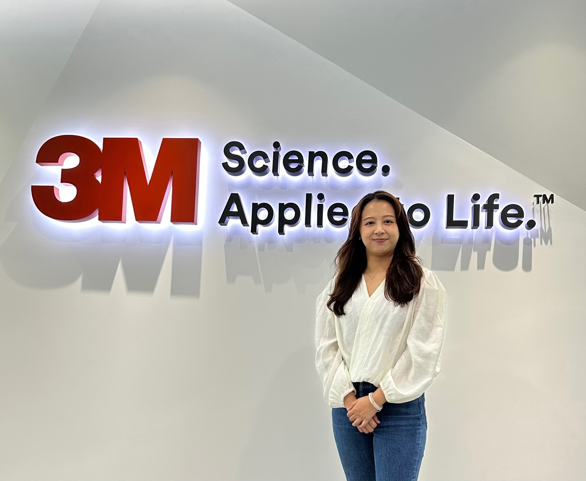
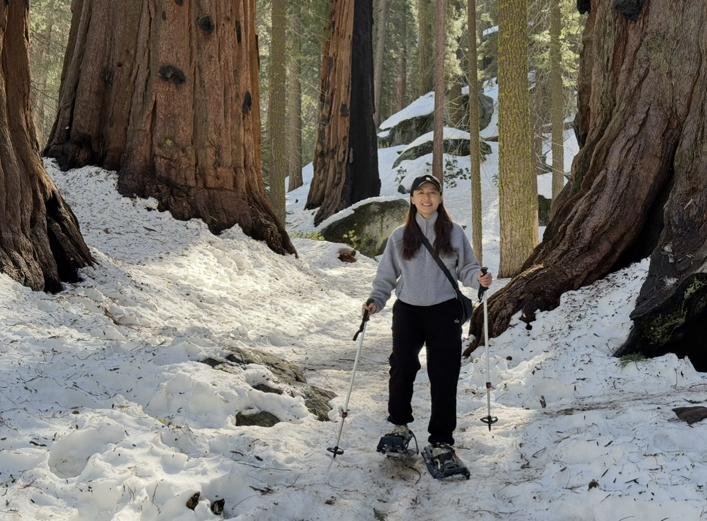
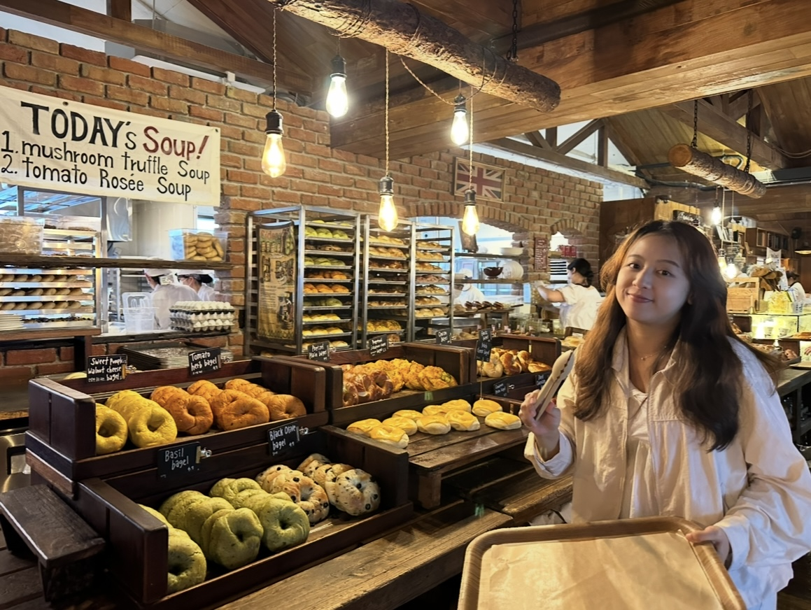

Hi I’m Lydia 👋🏼
 Work
 Travel
 Food
Snapshot
- 3M Electronics Material | 5 + years:
I worked as Marketing Analyst and Technical Product Manager for semiconductor products—worked with Sales, R&D, and Manufacturing to launch adhesive and packaging solutions. - M.S. Business Analytics | UC Irvine:
Focus in machine learning, statistics, and data storytelling. Held student-club leadership roles in Product Club (VP Ops) and Women in Business (VP Comms).
What I’m great at
Data Science
Python MySQL scikit-learn Forecasting Clustering NLP Deep LearningStory-telling
Tableau Quarto Power BI Dashboards Slide-docs Data VizProduct / Project
Agile Jira Lean Six Sigma A/B testing New Product Launch Go-To-Market Stakeholder AlignmentWorking style
Clear communication, thoughtful prioritization, and a steady focus on delivery. I collaborate with teams and stakeholders to turn data-driven insights into real-world value—even when the path forward is ambiguous.
Outside of Work
🏀 Watching NBA games
🥾 National-park hikes & new trails
🍣 Hunting hidden-gem everywhere
📸 Freezing moments with friends & family
Good data work = clarity × collaboration × impact.
That’s the lens I bring to every project.
📬 Let’s chat about data, product ideas, or your favorite park.